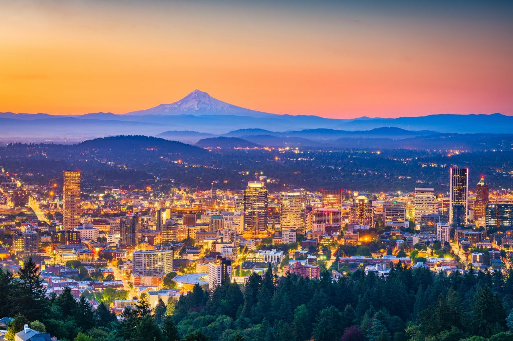

Welcome to the City of Roses
Situated in the Pacific Northwest between the snow-capped peak of Mount Hood and the wide currents of the Willamette River, Portland, Oregon, is a city built on creative independence, outdoor passion, and sustainable living.

Whether you're visiting for a weekend getaway or planning an extended stay, Portland offers an unmatched combination of urban parks, world-renowned microbreweries, historic indie bookstores, and a celebrated food culture.
Why Visit Portland?
Portland stands out among American cities for its commitment to green spaces, walkable districts, and distinct micro-neighborhoods.
- Walkable Neighborhoods: Explore distinct districts like the historic Pearl District, bohemian Alberta Arts, and vintage-filled Hawthorne Boulevard.
- Lush Green Spaces: Home to Forest Park, one of the nation's largest urban forest reserves, offering over 80 miles of scenic hiking trails inside city limits.
- Culinary Innovation: Over 500 food carts operating across neighborhood pods, serving authentic international dishes alongside award-winning fine dining.
- Eco-Friendly Transit: Effortlessly navigate the city via the MAX Light Rail, Portland Streetcar, and miles of dedicated bicycle highways.